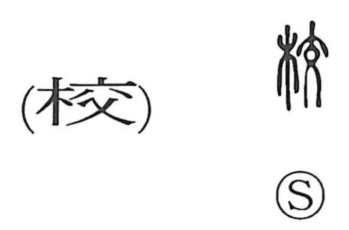

校

Kun: | On: kou
school ・ to compare ・ to consult ・ to plan ・ to count
Explanation
校 combines 木, wood, with 交 as its phonetic. 交 pictures a person standing with the legs crossed. Its crossing form is associated here with the timbers crossing above a building's roof.
A building bearing those roof timbers is a school, the place where young people learn. 校 consequently names a school and the activity of receiving instruction. The crossed timbers belong to the same architectural setting visible in the older form of 學.
The word also interchanges with 較 for comparing, measuring, and checking. Other old wooden uses include restraints and enclosures. These share a practical vocabulary of wooden structures, while the school sense keeps the roofed place of instruction in view.